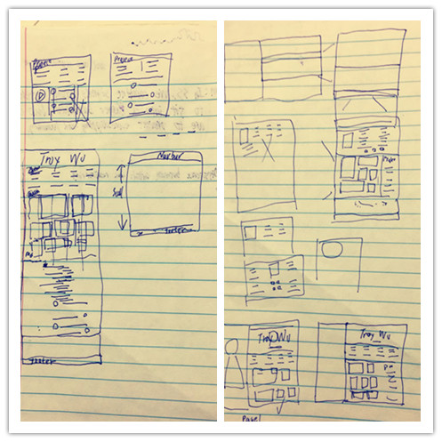

.Hooray!!!I finally finished building my very first website and have it host online. So proud of myself. Even though it took me more than a month working on this project, I really enjoy it every step of the process, from scratch to finish. To be honest, I have never been addicted to code like this. I spent about 5 hours each day thinking how to make it looks pretty and how to create some unique functions. Well, it is totally worthy.
.The most difficult thing of building a website is not coding, it is design. I am not good at designing at all but I do not want to copy directly from others work either. There are tons of awesome templates on the internet for free, it would be much easier if I just download one of them and change something from it by myself. If so, this is not building, it is plagiarism. I first drew a lot of layouts for the website, and I finally end up picking one of them. However, I discarded everything after I make the layout I picked be real. I just don’t like it all of sudden. So, I spent a few days brainstorming of designing my unique website. The next most challenging thing is picking color because the color you pick will be the main style of your website, and it must be readable and not creepy. I like blue personally, so I spent a few days just to figure out what kind of blue is perfect for my web.
.After the website finally looks real, the last thing I did is to fix the bugs. This is a responsive website, so it should be looked perfectly on every size of screen. I tried my best to make it perfect, but regarding of the limited of my programming skill, there are still some imperfections in the website. I tried everything and google is the most important tool I used. Anyway, I am still not able to fix the bugs, perhaps they are just some simple bugs because there are some bugs I won’t be able to solve it at that moment, but they just become very tiny issues a few days later. So, I might be able to fix it after few days when I gain more experience than now.
.Whenever I look at my own website, I feel so freaking existing. I cannot wait to let the world to see it but I have to wait two days for the web host processing. And, that’s it. My first post on my first web.
Hello World
Hello World
Hello World